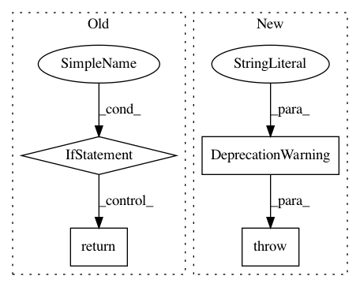

0c3b9ebeef167a9eeb6eed9fb18f328ecb5a3c6f,python/ray/tune/session.py,,make_checkpoint_dir,#Any#,75
Before Change
_session = get_session()
if _session:
return _session.make_checkpoint_dir(step=step)
else:
return os.path.abspath("./")
def save_checkpoint(checkpoint):
Register the given checkpoint.
.. code-block:: python
After Change
.. deprecated:: 0.8.7
Use tune.checkpoint_dir instead.
raise DeprecationWarning(
"Deprecated method. Use `tune.checkpoint_dir` instead.")
def save_checkpoint(checkpoint):
Register the given checkpoint.
In pattern: SUPERPATTERN
Frequency: 3
Non-data size: 4
Instances
Project Name: ray-project/ray
Commit Name: 0c3b9ebeef167a9eeb6eed9fb18f328ecb5a3c6f
Time: 2020-07-30
Author: rliaw@berkeley.edu
File Name: python/ray/tune/session.py
Class Name:
Method Name: make_checkpoint_dir
Project Name: ray-project/ray
Commit Name: 0c3b9ebeef167a9eeb6eed9fb18f328ecb5a3c6f
Time: 2020-07-30
Author: rliaw@berkeley.edu
File Name: python/ray/tune/session.py
Class Name:
Method Name: save_checkpoint
Project Name: ray-project/ray
Commit Name: 836c5d5a910920a5c7b253996151632628e3cf88
Time: 2020-12-28
Author: ekhliang@gmail.com
File Name: python/ray/experimental/dynamic_resources.py
Class Name:
Method Name: set_resource